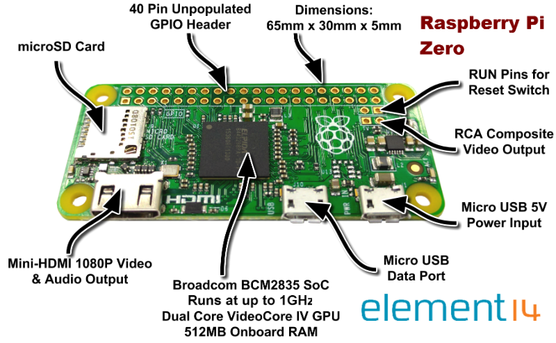
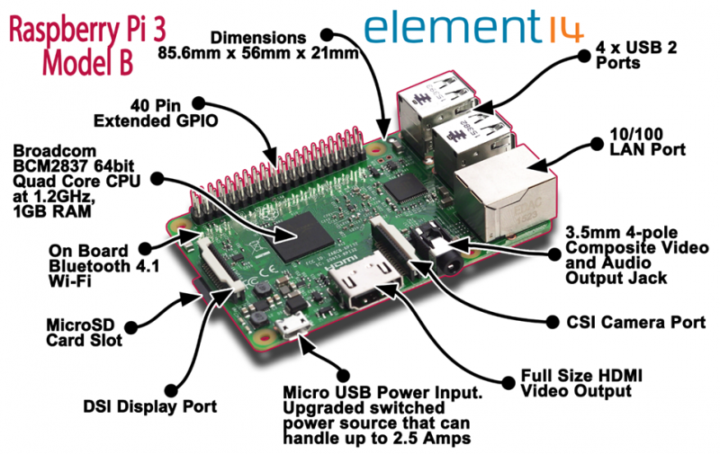
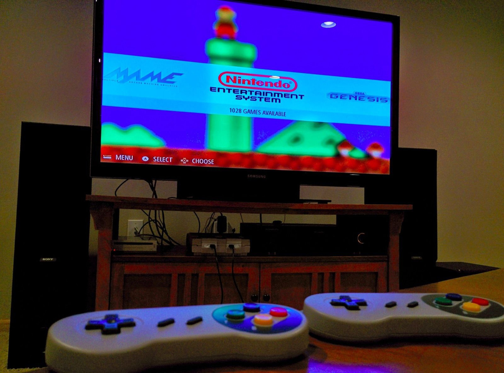
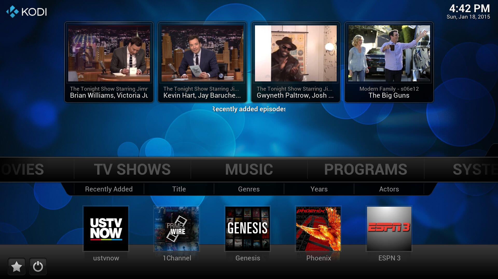
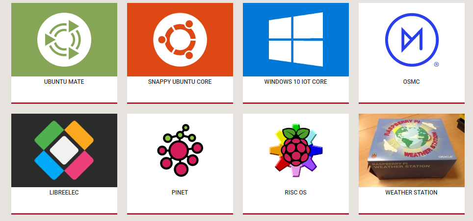
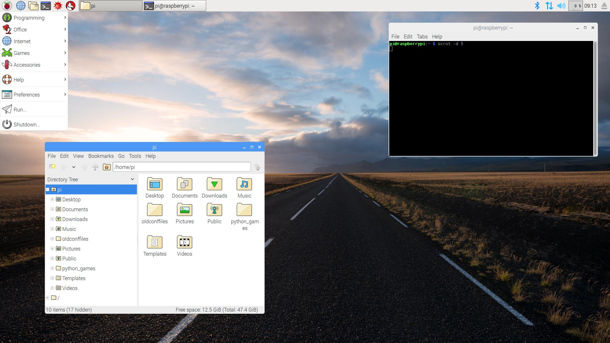
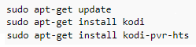
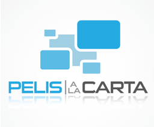

Obradoiro de Raspberry: Introducción a Kodi e Retropie
Sobre min
Christian López Rodríguez
Enxeñeiro Informático
Aficcionado á electrónica
Socio de Aberteo
Email: clopezrodriguez95@gmail.com
¿Qué vamos a facer?
- ¿Qué é e para que serve unha Raspberry?
- Modelos, precios e onde compralos
- Accesorios, packs
- Instalación/Posta en funcionamento
- Retropie, ¿qué é?
- Instalación de xogos
-¿Qué é Kodi?
-Preguntas e comentarios
¿Qué é, e para que serve unha Raspberry?
Mini PC
Boas prestacións
Multitude de compoñentes
Precio económico

Raspberry Pi Zero W
Raspberry Pi 2 Modelo B
+ Potencia e conectividade
CPU quad-core 0.9GHz
1GB RAM
4 USBs, ethernet, conectores para pantalla, cámara
35€ - 70€ Amazon
Raspberry Pi 3 Modelo B

Qué é retropie?
Emulador de consolas antigas
Atari, Sega, Nintendo DS, NES, ...
Multitude de ROMS dispoñibles
Fácil instalación e configuración
¿Qué é un Media Center?
Equipo que permite a reproducción de contido mulimedia: música, películas, fotos etc...
Reproducción local ou remota.
Multitude de Add-ons
¿Qué conseguimos se xuntamos as partes?
Kodi
Retropie
Raspberry
¿Qué conseguimos se xuntamos as partes?


¿Isto cómo se fai?
Pasos da instalación
- 1) Ter unha tarxeta SD de mínimo 8GB formateada.
- 2) Descargar un Sistema Operativo. Raspbian, Noobs, etc...
- 3) Copiar o Sistema Operativo na tarxeta SD.
- 4) Insertar a tarxeta na Raspberry.
1) Tarxeta Micro SD mínimo 8GB formateada
2) Descargar un Sistema Operativo
- Moitas versións dispoñibles. Linux, Debian, Windows, etc...
- Dúas maneiras principais: NOOBS ou manualmente

4) Insertar a tarxeta na Raspberry
Instalación de Retropie
Instalación dende terminal
Documentación oficial explicado paso a paso
O proceso moi sinxelo e corto
Comándos básicos (cd, git)
Git para descargar o emulador
Carga de xogos
Os xogos son as chamadas "ROMs"
A carga é moi sinxela. "copy - paste"
Descargar a ROM -> Copiala na carpeta do emulador correspondente -> a viciar!
O complicado e saber a que xogar!!!
Instalación de Kodi
Instalación dende terminal
Pasos moi simples dende a terminal (apt)
Configuración / Personalización
- Idioma, apariencia
- Acceso remoto.
- Usuarios, contas.
- Accesibilidade, etc...
Configuración do acceso remoto
- Podemos acceder a kodi desde a web.
- Configuración do porto de acceso, usuario e contrasinal.
Configuración das demais opcións
- Permitir instalar desde oríxenes desconocidos
- Código de bloqueo / control parental
- Resolución de pantalla
- Sons
Add-ons. ¿Qué son?
- Aplicacións/complementos multimedia que aumentan as opcións de Kodi.
- Orientadas a películas, series, internet, noticias, etc....
- Son gratuítas e sinxelos de instalar.
Add-ons - exemplos
Add-ons - Instalación
- Desde repositorios oficiais (Youtube, KissFM, Netflix).
- Desde repositorios de terceiros.
Gracias a todos!
- Preguntas, dudas
- Consellos, contribucións, o que queirades!